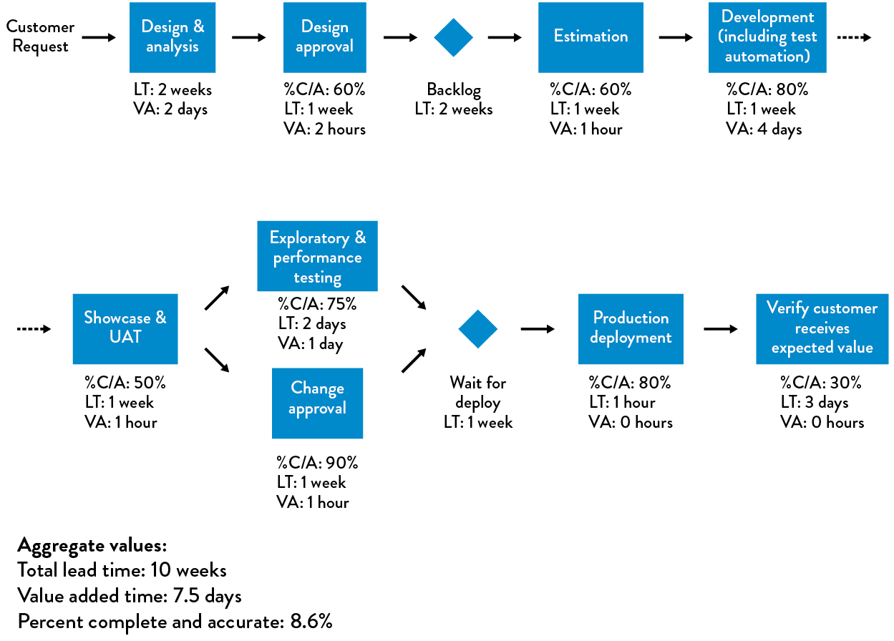
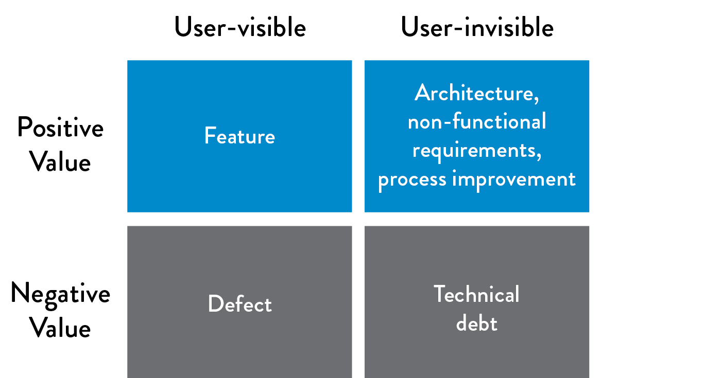

6Understanding the Work in Our Value Stream, Making it Visible, and Expanding it Across the Organization
Once we have identified a value stream to which we want to apply DevOps principles and patterns, our next step is to gain a sufficient understanding of how value is delivered to the customer: what work is performed and by whom, and what steps can we take to improve flow.
In the previous chapter, we learned about the DevOps transformation led by Courtney Kissler and the team at Nordstrom. Over the years, they have learned that one of the most efficient ways to start improving any value stream is to conduct a workshop with all the major stakeholders and perform a value stream mapping exercise—a process (described later in this chapter) designed to help capture all the steps required to create value.
Kissler’s favorite example of the valuable and unexpected insights that can come from value stream mapping is when they tried to improve the long lead times associated with requests going through the Cosmetics Business Office application, a COBOL mainframe application that supported all the floor and department managers of their in-store beauty and cosmetic departments.
This application allowed department managers to register new salespeople for various product lines carried in their stores, so that they could track sales commissions, enable vendor rebates, and so forth.
Kissler explained:
I knew this particular mainframe application well—earlier in my career, I supported this technology team, so I know firsthand that for nearly a decade, during each annual planning cycle, we would debate about how we needed to get this application off the mainframe. Of course, like in most organizations, even when there was full management support, we never seemed to get around to migrating it.
My team wanted to conduct a value stream mapping exercise to determine whether the COBOL application really was the problem, or maybe there was a larger problem that we needed to address. They conducted a workshop that assembled everyone with any accountability for delivering value to our internal customers, including our business partners, the mainframe team, the shared service teams, and so forth.
What they discovered was that when department managers were submitting the ‘product line assignment’ request form, we were asking them for an employee number, which they didn’t have—so they would either leave it blank or put in something like ‘I don’t know.’ Worse, in order to fill out the form, department managers would have to inconveniently leave the store floor in order to use a PC in the back office. The end result was all this wasted time, with work bouncing back and forth in the process.
During the workshop, the participants conducted several experiments, including deleting the employee number field in the form and letting another department get that information in a downstream step. These experiments, conducted with the help of department managers, showed a four-day reduction in processing time. The team later replaced the PC application with an iPad application, which allowed managers to submit the necessary information without leaving the store floor, and the processing time was further reduced to seconds.
She said proudly, “With those amazing improvements, all the demands to get this application off the mainframe disappeared. Furthermore, other business leaders took notice and started coming to us with a whole list of further experiments they wanted to conduct with us in their own organizations. Everyone in the business and technology teams were excited by the outcome because they solved a real business problem, and, most importantly, they learned something in the process.”
In the remainder of this chapter, we will go through the following steps: identifying all the teams required to create customer value, creating a value stream map to make visible all the required work, and using it to guide the teams in how to better and more quickly create value. By doing this, we can replicate the amazing outcomes described in this Nordstrom example.
IDENTIFYING THE TEAMS SUPPORTING OUR VALUE STREAM
As this Nordstrom example demonstrates, in value streams of any complexity, no one person knows all the work that must be performed in order to create value for the customer—especially since the required work must be performed by many different teams, often far removed from each other on the organization charts, geographically, or by incentives.
As a result, after we select a candidate application or service for our DevOps initiative, we must identify all the members of the value stream who are responsible for working together to create value for the customers being served. In general, this includes:
- Product owner: the internal voice of the business that defines the next set of functionality in the service
- Development: the team responsible for developing application functionality in the service
- QA: the team responsible for ensuring that feedback loops exist to ensure the service functions as desired
- Operations: the team often responsible for maintaining the production environment and helping ensure that required service levels are met
- Infosec: the team responsible for securing systems and data
- Release managers: the people responsible for managing and coordinating the production deployment and release processes
- Technology executives or value stream manager: in Lean literature, someone who is responsible for “ensuring that the value stream meets or exceeds the customer [and organizational] requirements for the overall value stream, from start to finish”
CREATE A VALUE STREAM MAP TO SEE THE WORK
After we identify our value stream members, our next step is to gain a concrete understanding of how work is performed, documented in the form of a value stream map. In our value stream, work likely begins with the product owner, in the form of a customer request or the formulation of a business hypothesis. Some time later, this work is accepted by Development, where features are implemented in code and checked in to our version control repository. Builds are then integrated, tested in a production-like environment, and finally deployed into production, where they (ideally) create value for our customer.
In many traditional organizations, this value stream will consist of hundreds, if not thousands, of steps, requiring work from hundreds of people. Because documenting any value stream map this complex likely requires multiple days, we may conduct a multi-day workshop, where we assemble all the key constituents and remove them from the distractions of their daily work.
Our goal is not to document every step and associated minutiae, but to sufficiently understand the areas in our value stream that are jeopardizing our goals of fast flow, short lead times, and reliable customer outcomes. Ideally, we have assembled those people with the authority to change their portion of the value stream.†
Damon Edwards, co-host of DevOps Café podcast, observed, “In my experience, these types of value stream mapping exercises are always an eye-opener. Often, it is the first time when people see how much work and heroics are required to deliver value to the customer. For Operations, it may be the first time that they see the consequences that result when developers don’t have access to correctly configured environments, which contributes to even more crazy work during code deployments. For Development, it may be the first time they see all the heroics that are required by Test and Operations in order to deploy their code into production, long after they flag a feature as ‘completed.’”
Using the full breadth of knowledge brought by the teams engaged in the value stream, we should focus our investigation and scrutiny on the following areas:
- Places where work must wait weeks or even months, such as getting production-like environments, change approval processes, or security review processes
- Places where significant rework is generated or received
Our first pass of documenting our value stream should only consist of high-level process blocks. Typically, even for complex value streams, groups can create a diagram with five to fifteen process blocks within a few hours. Each process block should include the lead time and process time for a work item to be processed, as well as the %C/A as measured by the downstream consumers of the output.‡
 Figure 10: An example of a value stream map
(Source: Humble, Molesky, and O’Reilly, Lean Enterprise, 139.)
We use the metrics from our value stream map to guide our improvement efforts. In the Nordstrom example, they focused on the low %C/A rates on the request form submitted by department managers due to the absence of employee numbers. In other cases, it may be long lead times or low %C/A rates when delivering correctly configured test environments to Development teams, or it might be the long lead times required to execute and pass regression testing before each software release.
Once we identify the metric we want to improve, we should perform the next level of observations and measurements to better understand the problem and then construct an idealized, future value stream map, which serves as a target condition to achieve by some date (e.g., usually three to twelve months).
Leadership helps define this future state and then guides and enables the team to brainstorm hypotheses and countermeasures to achieve the desired improvement to that state, perform experiments to test those hypotheses, and interpret the results to determine whether the hypotheses were correct. The teams keep repeating and iterating, using any new learnings to inform the next experiments.
CREATING A DEDICATED TRANSFORMATION TEAM
One of the inherent challenges with initiatives such as DevOps transformations is that they are inevitably in conflict with ongoing business operations. Part of this is a natural outcome of how successful businesses evolve. An organization that has been successful for any extended period of time (years, decades, or even centuries) has created mechanisms to perpetuate the practices that made them successful, such as product development, order administration, and supply chain operations.
Many techniques are used to perpetuate and protect how current processes operate, such as specialization, focus on efficiency and repeatability, bureaucracies that enforce approval processes, and controls to protect against variance. In particular, bureaucracies are incredibly resilient and are designed to survive adverse conditions—one can remove half the bureaucrats, and the process will still survive.
While this is good for preserving status quo, we often need to change how we work to adapt to changing conditions in the marketplace. Doing this requires disruption and innovation, which puts us at odds with groups who are currently responsible for daily operations and the internal bureaucracies, and who will almost always win.
In their book The Other Side of Innovation: Solving the Execution Challenge, Dr. Vijay Govindarajan and Dr. Chris Trimble, both faculty members of Dartmouth College’s Tuck School of Business, described their studies of how disruptive innovation is achieved despite these powerful forces of daily operations. They documented how customer-driven auto insurance products were successfully developed and marketed at Allstate, how the profitable digital publishing business was created at the Wall Street Journal, the development of the breakthrough trail-running shoe at Timberland, and the development of the first electric car at BMW.
Based on their research, Dr. Govindarajan and Dr. Trimble assert that organizations need to create a dedicated transformation team that is able to operate outside of the rest of the organization that is responsible for daily operations (which they call the “dedicated team” and “performance engine” respectively).
First and foremost, we will hold this dedicated team accountable for achieving a clearly defined, measurable, system-level result (e.g., reduce the deployment lead time from “code committed into version control to successfully running in production” by 50%). In order to execute such an initiative, we do the following:
- Assign members of the dedicated team to be solely allocated to the DevOps transformation efforts (as opposed to “maintain all your current responsibilities, but spend 20% of your time on this new DevOps thing.”).
- Select team members who are generalists, who have skills across a wide variety of domains.
- Select team members who have longstanding and mutually respectful relationships with the rest of the organization.
- Create a separate physical space for the dedicated team, if possible, to maximize communication flow within the team, and creating some isolation from the rest of the organization.
If possible, we will free the transformation team from many of the rules and policies that restrict the rest of the organization, as National Instruments did, described in the previous chapter. After all, established processes are a form of institutional memory—we need the dedicated team to create the new processes and learnings required to generate our desired outcomes, creating new institutional memory.
Creating a dedicated team is not only good for the team, but also good for the performance engine. By creating a separate team, we create the space for them to experiment with new practices, protecting the rest of the organization from the potential disruptions and distractions associated with it.
AGREE ON A SHARED GOAL
One of the most important parts of any improvement initiative is to define a measurable goal with a clearly defined deadline, between six months and two years in the future. It should require considerable effort but still be achievable. And achievement of the goal should create obvious value for the organization as a whole and to our customers.
These goals and the time frame should be agreed upon by the executives and known to everyone in the organization. We also want to limit the number of these types of initiatives going on simultaneously to prevent us from overly taxing the organizational change management capacity of leaders and the organization. Examples of improvement goals might include:
- Reduce the percentage of the budget spent on product support and unplanned work by 50%.
- Ensure lead time from code check-in to production release is one week or less for 95% of changes.
- Ensure releases can always be performed during normal business hours with zero downtime.
- Integrate all the required information security controls into the deployment pipeline to pass all required compliance requirements.
Once the high-level goal is made clear, teams should decide on a regular cadence to drive the improvement work. Like product development work, we want transformation work to be done in an iterative, incremental manner. A typical iteration will be in the range of two to four weeks. For each iteration, the teams should agree on a small set of goals that generate value and makes some progress toward the long-term goal. At the end of each iteration, teams should review their progress and set new goals for the next iteration.
KEEP OUR IMPROVEMENT PLANNING HORIZONS SHORT
In any DevOps transformation project, we need to keep our planning horizons short, just as if we were in a startup doing product or customer development. Our initiative should strive to generate measurable improvements or actionable data within weeks (or, in the worst case, months).
By keeping our planning horizons and iteration intervals short, we achieve the following:
- Flexibility and the ability to reprioritize and replan quickly
- Decrease the delay between work expended and improvement realized, which strengthens our feedback loop, making it more likely to reinforce desired behaviors—when improvement initiatives are successful, it encourages more investment
- Faster learning generated from the first iteration, meaning faster integration of our learnings into the next iteration
- Reduction in activation energy to get improvements
- Quicker realization of improvements that make meaningful differences in our daily work
- Less risk that our project is killed before we can generate any demonstrable outcomes
RESERVE 20% OF CYCLES FOR NON-FUNCTIONAL REQUIREMENTS AND REDUCING TECHNICAL DEBT
A problem common to any process improvement effort is how to properly prioritize it—after all, organizations that need it most are those that have the least amount of time to spend on improvement. This is especially true in technology organizations because of technical debt.
Organizations that struggle with financial debt only make interest payments and never reduce the loan principal, and may eventually find themselves in situations where they can no longer service the interest payments. Similarly, organizations that don’t pay down technical debt can find themselves so burdened with daily workarounds for problems left unfixed that they can no longer complete any new work. In other words, they are now only making the interest payment on their technical debt.
We will actively manage this technical debt by ensuring that we invest at least 20% of all Development and Operations cycles on refactoring, investing in automation work and architecture and non-functional requirements (NFRs, sometimes referred to as the “ilities”), such as maintainability, manageability, scalability, reliability, testability, deployability, and security.
 Figure 11: Invest 20% of cycles on those that create positive, user-invisible value
(Source: “Machine Learning and Technical Debt with D. Sculley,” Software Engineering Daily podcast, November 17, 2015, http://softwareengineeringdaily.com/2015/11/17/machine-learning-and-technical-debt-with-d-sculley/.)
After the near-death experience of eBay in the late 1990s, Marty Cagan, author of Inspired: How To Create Products Customers Love, the seminal book on product design and management, codified the following lesson:
The deal [between product owners and] engineering goes like this: Product management takes 20% of the team’s capacity right off the top and gives this to engineering to spend as they see fit. They might use it to rewrite, re-architect, or re-factor problematic parts of the code base...whatever they believe is necessary to avoid ever having to come to the team and say, ‘we need to stop and rewrite [all our code].’ If you’re in really bad shape today, you might need to make this 30% or even more of the resources. However, I get nervous when I find teams that think they can get away with much less than 20%.
Cagan notes that when organizations do not pay their “20% tax,” technical debt will increase to the point where an organization inevitably spends all of its cycles paying down technical debt. At some point, the services become so fragile that feature delivery grinds to a halt because all the engineers are working on reliability issues or working around problems.
By dedicating 20% of our cycles so that Dev and Ops can create lasting countermeasures to the problems we encounter in our daily work, we ensure that technical debt doesn’t impede our ability to quickly and safely develop and operate our services in production. Elevating added pressure of technical debt from workers can also reduce levels of burnout.
Case Study
Operation InVersion at LinkedIn (2011)
LinkedIn’s Operation InVersion presents an interesting case study that illustrates the need to pay down technical debt as a part of daily work. Six months after their successful IPO in 2011, LinkedIn continued to struggle with problematic deployments that became so painful that they launched Operation InVersion, where they stopped all feature development for two months in order to overhaul their computing environments, deployments, and architecture.
LinkedIn was created in 2003 to help users “connect to your network for better job opportunities.” By the end of their first week of operation, they had 2,700 members. One year later, they had over one million members, and have grown exponentially since then. By November 2015, LinkedIn had over 350 million members, who generate tens of thousands of requests per second, resulting in millions of queries per second on the LinkedIn back-end systems.
From the beginning, LinkedIn primarily ran on their homegrown Leo application, a monolithic Java application that served every page through servlets and managed JDBC connections to various back-end Oracle databases. However, to keep up with growing traffic in their early years, two critical services were decoupled from Leo: the first handled queries around the member connection graph entirely in-memory, and the second was member search, which layered over the first.
By 2010, most new development was occurring in new services, with nearly one hundred services running outside of Leo. The problem was that Leo was only being deployed once every two weeks.
Josh Clemm, a senior engineering manager at LinkedIn, explained that by 2010, the company was having significant problems with Leo. Despite vertically scaling Leo by adding memory and CPUs, “Leo was often going down in production, it was difficult to troubleshoot and recover, and difficult to release new code….It was clear we needed to ‘Kill Leo’ and break it up into many small functional and stateless services.”
In 2013, journalist Ashlee Vance of Bloomberg described how “when LinkedIn would try to add a bunch of new things at once, the site would crumble into a broken mess, requiring engineers to work long into the night and fix the problems.” By Fall 2011, late nights were no longer a rite of passage or a bonding activity, because the problems had become intolerable. Some of LinkedIn’s top engineers, including Kevin Scott, who had joined as the LinkedIn VP of Engineering three months before their initial public offering, decided to completely stop engineering work on new features and dedicate the whole department to fixing the site’s core infrastructure. They called the effort Operation InVersion.
Scott launched Operation InVersion as a way to “inject the beginnings of a cultural manifesto into his team’s engineering culture. There would be no new feature development until LinkedIn’s computing architecture was revamped—it’s what the business and his team needed.”
Scott described one downside: “You go public, have all the world looking at you, and then we tell management that we’re not going to deliver anything new while all of engineering works on this [InVersion] project for the next two months. It was a scary thing.”
However, Vance described the massively positive results of Operation InVersion. “LinkedIn created a whole suite of software and tools to help it develop code for the site. Instead of waiting weeks for their new features to make their way onto LinkedIn’s main site, engineers could develop a new service, have a series of automated systems examine the code for any bugs and issues the service might have interacting with existing features, and launch it right to the live LinkedIn site...LinkedIn’s engineering corps [now] performs major upgrades to the site three times a day.” By creating a safer system of work, the value they created included fewer late night cram sessions, with more time to develop new, innovative features.
As Josh Clemm described in his article on scaling at LinkedIn, “Scaling can be measured across many dimensions, including organizational…. [Operation InVersion] allowed the entire engineering organization to focus on improving tooling and deployment, infrastructure, and developer productivity. It was successful in enabling the engineering agility we need to build the scalable new products we have today….[In] 2010, we already had over 150 separate services. Today, we have over 750 services.”
Kevin Scott stated, “Your job as an engineer and your purpose as a technology team is to help your company win. If you lead a team of engineers, it’s better to take a CEO’s perspective. Your job is to figure out what it is that your company, your business, your marketplace, your competitive environment needs. Apply that to your engineering team in order for your company to win.”
By allowing LinkedIn to pay down nearly a decade of technical debt, Project InVersion enabled stability and safety, while setting the next stage of growth for the company. However, it required two months of total focus on non-functional requirements, at the expense of all the promised features made to the public markets during an IPO. By finding and fixing problems as part of our daily work, we manage our technical debt so that we avoid these “near death” experiences.
INCREASE THE VISIBILITY OF WORK
In order to be able to know if we are making progress toward our goal, it’s essential that everyone in the organization knows the current state of work. There are many ways to make the current state visible, but what’s most important is that the information we display is up to date, and that we constantly revise what we measure to make sure it’s helping us understand progress toward our current target conditions.
The following section discusses patterns that can help create visibility and alignment across teams and functions.
USE TOOLS TO REINFORCE DESIRED BEHAVIOR
As Christopher Little, a software executive and one of the earliest chroniclers of DevOps, observed, “Anthropologists describe tools as a cultural artifact. Any discussion of culture after the invention of fire must also be about tools.” Similarly, in the DevOps value stream, we use tools to reinforce our culture and accelerate desired behavior changes.
One goal is that our tooling reinforces that Development and Operations not only have shared goals, but have a common backlog of work, ideally stored in a common work system and using a shared vocabulary, so that work can be prioritized globally.
By doing this, Development and Operations may end up creating a shared work queue, instead of each silo using a different one (e.g., Development uses JIRA while Operations uses ServiceNow). A significant benefit of this is that when production incidents are shown in the same work systems as development work, it will be obvious when ongoing incidents should halt other work, especially when we have a kanban board.
Another benefit of having Development and Operations using a shared tool is a unified backlog, where everyone prioritizes improvement projects from a global perspective, selecting work that has the highest value to the organization or most reduces technical debt. As we identify technical debt, we add it to our prioritized backlog if we can’t address it immediately. For issues that remain unaddressed, we can use our “20% time for non-functional requirements” to fix the top items from our backlog.
Other technologies that reinforce shared goals are chat rooms, such as IRC channels, HipChat, Campfire, Slack, Flowdock, and OpenFire. Chat rooms allow the fast sharing of information (as opposed to filling out forms that are processed through predefined workflows), the ability to invite other people as needed, and history logs that are automatically recorded for posterity and can be analyzed during post-mortem sessions.
An amazing dynamic is created when we have a mechanism that allows any team member to quickly help other team members, or even people outside their team—the time required to get information or needed work can go from days to minutes. In addition, because everything is being recorded, we may not need to ask someone else for help in the future—we simply search for it.
However, the rapid communication environment facilitated by chat rooms can also be a drawback. As Ryan Martens, the founder and CTO of Rally Software, observes, “In a chat room, if someone doesn’t get an answer in a couple of minutes, it’s totally accepted and expected that you can bug them again until they get what they need.”
The expectations of immediate response can, of course, lead to undesired outcomes. A constant barrage of interruptions and questions can prevent people from getting necessary work done. As a result, teams may decide that certain types of requests should go through more structured and asynchronous tools.
CONCLUSION
In this chapter, we identified all the teams supporting our value stream and captured in a value stream map what work is required in order to deliver value to the customer. The value stream map provides the basis for understanding our current state, including our lead time and %C/A metrics for problematic areas, and informs how we set a future state.
This enables dedicated transformation teams to rapidly iterate and experiment to improve performance. We also make sure that we allocate a sufficient amount of time for improvement, fixing known problems and architectural issues, including our non-functional requirements. The case studies from Nordstrom and LinkedIn demonstrate how dramatic improvements can be made in lead times and quality when we find problems in our value stream and pay down technical debt.

Table of contents
- Preface
- Foreword
- Imagine a World Where Dev and Ops Become DevOps
-
Part I The Three Ways
- A BRIEF HISTORY
- 1 Agile, Continuous Delivery, and the Three Ways
- 2 The First Way: The Principles of Flow
- 3 The Second Way: The Principles of Feedback
- 4 The Third Way: The Principles of Continual Learning and Experimentation
-
Part II Where to Start
- Introduction
- 5 Selecting Which Value Stream to Start With
- 6 Understanding the Work in Our Value Stream, Making it Visible, and Expanding it Across the Organization
-
7 How to Design Our Organization and Architecture with Conway’s Law in Mind
- ORGANIZATIONAL ARCHETYPES
- PROBLEMS OFTEN CAUSED BY OVERLY FUNCTIONAL ORIENTATION (“OPTIMIZING FOR COST”)
- ENABLE MARKET-ORIENTED TEAMS (“OPTIMIZING FOR SPEED”)
- MAKING FUNCTIONAL ORIENTATION WORK
- TESTING, OPERATIONS, AND SECURITY AS EVERYONE’S JOB, EVERY DAY
- ENABLE EVERY TEAM MEMBER TO BE A GENERALIST
- FUND NOT PROJECTS, BUT SERVICES AND PRODUCTS
- DESIGN TEAM BOUNDARIES IN ACCORDANCE WITH CONWAY’S LAW
- CREATE LOOSELY-COUPLED ARCHITECTURES TO ENABLE DEVELOPER PRODUCTIVITY AND SAFETY
- CONCLUSION
- 8 How to Get Great Outcomes by Integrating Operations into the Daily Work of Development
-
PART III—THE FIRST WAY: THE TECHNICAL PRACTICES OF FLOW
- 9 Create the Foundations of Our Deployment Pipeline
-
10 Enable Fast and Reliable Automated Testing
- CONTINUOUSLY BUILD, TEST, AND INTEGRATE OUR CODE AND ENVIRONMENTS
-
BUILD A FAST AND RELIABLE AUTOMATED VALIDATION TEST SUITE
- CATCH ERRORS AS EARLY IN OUR AUTOMATED TESTING AS POSSIBLE
- ENSURE TESTS RUN QUICKLY (IN PARALLEL, IF NECESSARY)
- WRITE OUR AUTOMATED TESTS BEFORE WE WRITE THE CODE (“TEST-DRIVEN DEVELOPMENT”)
- AUTOMATE AS MANY OF OUR MANUAL TESTS AS POSSIBLE
- INTEGRATE PERFORMANCE TESTING INTO OUR TEST SUITE
- INTEGRATE NON-FUNCTIONAL REQUIREMENTS TESTING INTO OUR TEST SUITE
- PULL OUR ANDON CORD WHEN THE DEPLOYMENT PIPELINE BREAKS
- CONCLUSION
- 11 Enable and Practice Continuous Integration
- 12 Automate and Enable Low-Risk Releases
- 13 Architect for Low-Risk Releases
-
PART IV—THE SECOND WAY: THE TECHNICAL PRACTICES OF FEEDBACK
- Introduction
-
14 Create Telemetry to Enable Seeing and Solving Problems
- CREATE OUR CENTRALIZED TELEMETRY INFRASTRUCTURE
- CREATE APPLICATION LOGGING TELEMETRY THAT HELPS PRODUCTION
- USE TELEMETRY TO GUIDE PROBLEM SOLVING
- ENABLE CREATION OF PRODUCTION METRICS AS PART OF DAILY WORK
- CREATE SELF-SERVICE ACCESS TO TELEMETRY AND INFORMATION RADIATORS
- FIND AND FILL ANY TELEMETRY GAPS
- CONCLUSION
- 15 Analyze Telemetry to Better Anticipate Problems and Achieve Goals
- 16 Enable Feedback So Development and Operations Can Safely Deploy Code
- 17 Integrate Hypothesis-Driven Development and A/B Testing into Our Daily Work
-
18 Create Review and Coordination Processes to Increase Quality of Our Current Work
- THE DANGERS OF CHANGE APPROVAL PROCESSES
- POTENTIAL DANGERS OF “OVERLY CONTROLLING CHANGES”
- ENABLE COORDINATION AND SCHEDULING OF CHANGES
- ENABLE PEER REVIEW OF CHANGES
- POTENTIAL DANGERS OF DOING MORE MANUAL TESTING AND CHANGE FREEZES
- ENABLE PAIR PROGRAMMING TO IMPROVE ALL OUR CHANGES
- FEARLESSLY CUT BUREAUCRATIC PROCESSES
- CONCLUSION
- PART IV CONCLUSION
-
PART V—THE THIRD WAY: THE TECHNICAL PRACTICES OF CONTINUAL LEARNING AND EXPERIMENTATION
- Introduction
-
19 Enable and Inject Learning into Daily Work
- ESTABLISH A JUST, LEARNING CULTURE
- SCHEDULE BLAMELESS POST-MORTEM MEETINGS AFTER ACCIDENTS OCCUR
- PUBLISH OUR POST-MORTEMS AS WIDELY AS POSSIBLE
- DECREASE INCIDENT TOLERANCES TO FIND EVER-WEAKER FAILURE SIGNALS
- REDEFINE FAILURE AND ENCOURAGE CALCULATED RISK-TAKING
- INJECT PRODUCTION FAILURES TO ENABLE RESILIENCE AND LEARNING
- INSTITUTE GAME DAYS TO REHEARSE FAILURES
- CONCLUSION
-
20 Convert Local Discoveries into Global Improvements
- USE CHAT ROOMS AND CHAT BOTS TO AUTOMATE AND CAPTURE ORGANIZATIONAL KNOWLEDGE
- AUTOMATE STANDARDIZED PROCESSES IN SOFTWARE FOR RE-USE
- CREATE A SINGLE, SHARED SOURCE CODE REPOSITORY FOR OUR ENTIRE ORGANIZATION
- SPREAD KNOWLEDGE BY USING AUTOMATED TESTS AS DOCUMENTATION AND COMMUNITIES OF PRACTICE
- DESIGN FOR OPERATIONS THROUGH CODIFIED NON-FUNCTIONAL REQUIREMENTS
- BUILD REUSABLE OPERATIONS USER STORIES INTO DEVELOPMENT
- ENSURE TECHNOLOGY CHOICES HELP ACHIEVE ORGANIZATIONAL GOALS
- CONCLUSION
- 21 Reserve Time to Create Organizational Learning and Improvement
-
22 Information Security as Everyone’s Job, Every Day
- INTEGRATE SECURITY INTO DEVELOPMENT ITERATION DEMONSTRATIONS
- INTEGRATE SECURITY INTO DEFECT TRACKING AND POST-MORTEMS
- INTEGRATE PREVENTIVE SECURITY CONTROLS INTO SHARED SOURCE CODE REPOSITORIES AND SHARED SERVICES
- INTEGRATE SECURITY INTO OUR DEPLOYMENT PIPELINE
- ENSURE SECURITY OF THE APPLICATION
- ENSURE SECURITY OF OUR SOFTWARE SUPPLY CHAIN
- ENSURE SECURITY OF THE ENVIRONMENT
- INTEGRATE INFORMATION SECURITY INTO PRODUCTION TELEMETRY
- CREATING SECURITY TELEMETRY IN OUR APPLICATIONS
- CREATING SECURITY TELEMETRY IN OUR ENVIRONMENT
- PROTECT OUR DEPLOYMENT PIPELINE
- CONCLUSION
-
23 Protecting the Deployment Pipeline
- INTEGRATE SECURITY AND COMPLIANCE INTO CHANGE APPROVAL PROCESSES
- RE-CATEGORIZE THE MAJORITY OF OUR LOWER RISK CHANGES AS STANDARD CHANGES
- WHAT TO DO WHEN CHANGES ARE CATEGORIZED AS NORMAL CHANGES
- REDUCE RELIANCE ON SEPARATION OF DUTY
- ENSURE DOCUMENTATION AND PROOF FOR AUDITORS AND COMPLIANCE OFFICERS
- CONCLUSION
- PART VI CONCLUSION
- A Call to Action
-
Appendices
- APPENDIX 1 THE CONVERGENCE OF DEVOPS
- APPENDIX 2 THEORY OF CONSTRAINTS AND CORE, CHRONIC CONFLICTS
- APPENDIX 3 TABULAR FORM OF DOWNWARD SPIRAL
- APPENDIX 4 THE DANGERS OF HANDOFFS AND QUEUES
- APPENDIX 5 MYTHS OF INDUSTRIAL SAFETY
- APPENDIX 6 THE TOYOTA ANDON CORD
- APPENDIX 7 COTS SOFTWARE
- APPENDIX 8 POST-MORTEM MEETINGS
- APPENDIX 9 THE SIMIAN ARMY
- APPENDIX 10 TRANSPARENT UPTIME
- Additional Resources
- Endnotes
- Index
- Acknowledgments
- Author Biographies